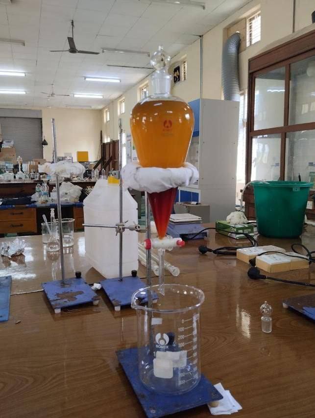

Research & Technological Innovation
Advancing engineering knowledge, applied technological solutions, and student innovation at West Yangon Technological University.
Research Focus at WYTU
Research at West Yangon Technological University emphasizes practical, applied engineering research designed to address local challenges in infrastructure, power generation, automation, environmental sustainability, and information technology.
Faculty researchers and final-year capstone students collaborate across multidisciplinary labs to solve technical problems relevant to Myanmar's expanding industrial and technological landscape.

Key Research Areas
Core technical domains investigated by WYTU departments.
Sustainable Infrastructure
Earthquake-resistant structural design, eco-friendly concrete composites, and geotechnical slope stability.
Renewable Power & Smart Grids
Solar microgrids, rural electrification models, high voltage equipment testing, and power system stability.
Robotics & Industrial Automation
Automated agricultural sensors, programmable logic controllers (PLCs), microcontrollers, and industrial robotics.
Artificial Intelligence & Networks
Myanmar language processing, cybersecurity frameworks, optical communication networks, and cloud computing.
Chemical & Bio-Process Technology
Industrial wastewater treatment, bio-ethanol conversion from agricultural waste, and material corrosion prevention.
Smart Agricultural Engineering
Precision drip irrigation systems, grain solar drying units, and farm mechanization equipment.
Student Capstone Projects
Every engineering undergraduate student at WYTU completes a major final-year engineering capstone project. These projects are presented annually during the WYTU Engineering Exhibition.
Academic Publications & Journals
Faculty members and graduate researchers regularly present scientific papers at national engineering conferences and technological symposia.